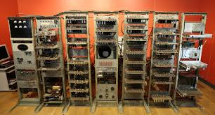

Small Scale Experimental Machine
Lo Small Scale Experimental Machine (traducibile dall'inglese come
"macchina sperimentale in scala ridotta", sigla SSEM, soprannominato Manchester
Baby "bimbo di Manchester" o Baby) è, tra quelli di cui si ha notizia,
il sesto computer elettronico digitale della storia,
dopo l'IBM 603 Electronic Multiplier. L'importanza storica del SSEM è notevole
in quanto è il primo computer elettronico a programma memorizzato della storia
e il primo computer della storia basato sull'architettura di von Neumann.
